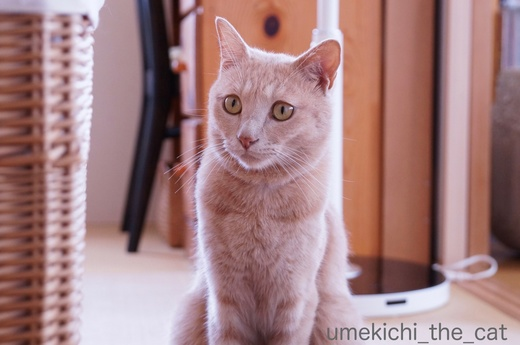
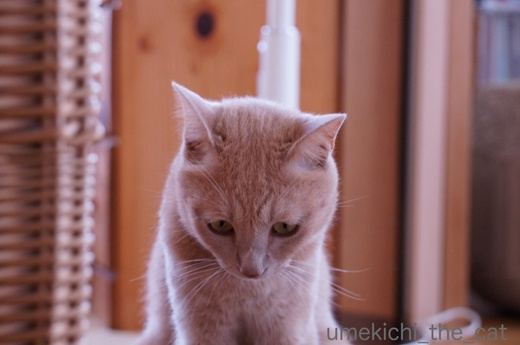
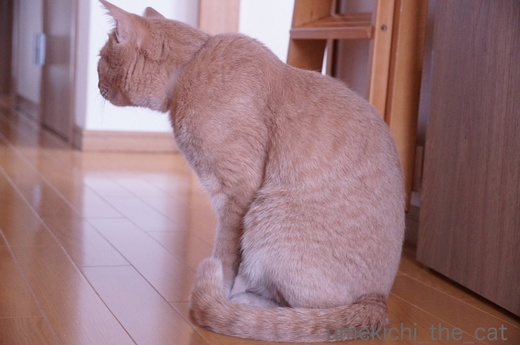
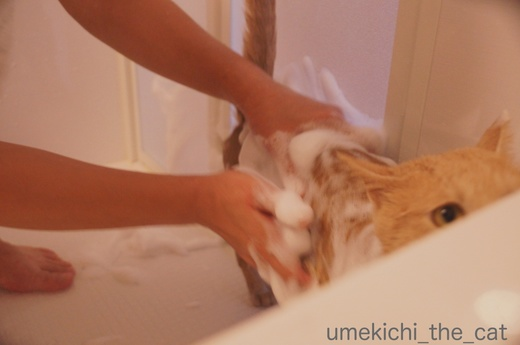
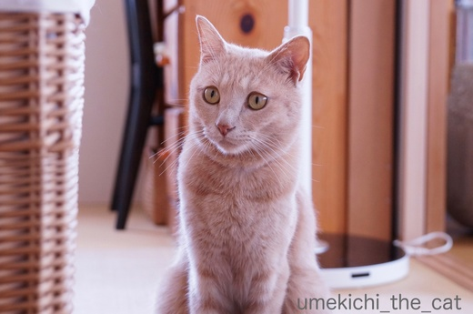
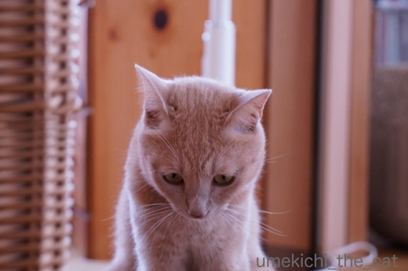
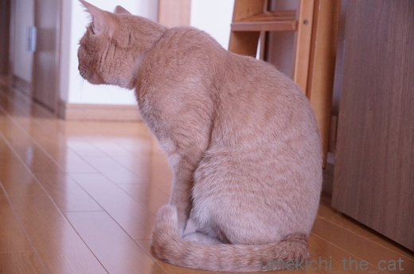
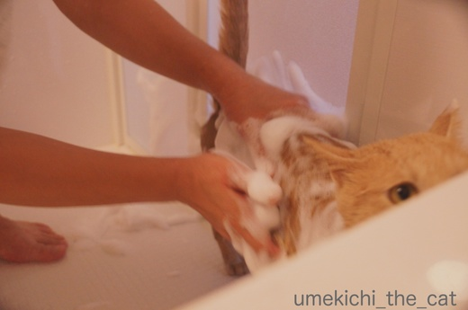

抜け毛総決算 [梅吉]
先週末の３連休、これだけ暑かったら早く乾くよね、と梅吉をシャンプーしました。
そろそろ抜け毛も落ち着いて来たのでさらにスッキリしちゃいましょう！

シャンプー係のおっとが準備を始めるとバスルームをびっくりまなこで伺う梅吉さんww
![[猫]](https://blog.ss-blog.jp/_images_e/101.gif) なんやめっちゃいやなよかんや。
なんやめっちゃいやなよかんや。

きのせいや、きのせいや・・・・・

でも目を逸らせない梅吉さんwwさらに近寄ってガン見(≧艸≦)

梅吉さんの動物的カンはよく当たりますねー。
はい、シャワーですよー。

みょ〜〜んと伸びて

おかーさんのそばにきて身震い！
わ〜、びょしょぬれになるからやめて〜。これは絶対嫌がらせだな。

次はあわあわですよ。

わわ、あわあわのまま近づいてこないでください![[あせあせ（飛び散る汗）]](https://blog.ss-blog.jp/_images_e/162.gif)

キラ〜ン![[ぴかぴか（新しい）]](https://blog.ss-blog.jp/_images_e/150.gif)
![[目]](https://blog.ss-blog.jp/_images_e/84.gif)
あわあわで身震いはや〜め〜て〜
この後は二人掛かりでしっかりすすぎ。
充分タオルドライした後はあちこち動き回りながら一生懸命に舐めていました。
シャンプー後挙動不審になるのは相変わらずです。

疲れて白目寝。おつかれさん。
梅雨明けになりましたね。
今日の予報では我が家の辺りは37℃と言っていたので覚悟して外に出たのですが
あれ？以外に平気。
どうやら予報ほど高温にはならなかった様です。
大阪はいつまでも猛暑日が続いて熱帯夜も一月くらい続くのはザラなのに
全国一暑かった！とニュースになることがないんですよね。なんか悔しい( ･̆ˍ･̆ )
 ↑ガブッと一押し↑
↑ガブッと一押し↑
昨夜は梅吉と二人だったのによりによってGさんがお出ましに![[がく～（落胆した顔）]](https://blog.ss-blog.jp/_images_e/142.gif)
のんびり映画見てたのにー。
まずは梅吉を寝室に隔離してコールドスプレー（冷凍瞬殺するとの謳い文句）と殺虫剤を両手に持って
「ひぁ〜〜〜〜〜〜〜〜！」とか「ひぃいいいいいいいいい」と叫びながら格闘。
怖くて直視出来ないので命中していないのかコールドスプレーを浴びせても生きている。
本当は梅吉のためにも使いたくなのですが殺虫剤でなんとか退治しました。
さらに叫び声をあげながら残骸を撤去、殺虫剤の跡が残っているフローリングを何度も拭き掃除と
１時間近くの作業。冷や汗と暑汗でぐったりしました。
この間ほぼ悲鳴。（拭き掃除の間は思い出し悲鳴）こんなに叫んだの生まれて初めてー。
エアコンで窓を閉め切っている時期でよかった。じゃなきゃ通報されてたかもw
我が家は生ゴミは冷凍庫にスペースを作ってそこに保管。
シンクに三角コーナーは置いていないし排水溝のごみ受けもキッチンを使うたび
必ず掃除＆アルコールスプレー。
キッチンの床も食べ物のクズが残っていたら嫌なので毎日拭き掃除もしています。
梅吉のゴハンは本にゃんが速攻で食べきるのでフードが残っていること
その辺に飛び散っていることもありません。
キッチンや洗面所お風呂の排水溝がGの進入路にならないように２〜3日に一度は
熱湯を流しています。
こんなに気をついているのにどうしてGが出るのー！！
しかも今回ヤツが現れたのはオーディオラックの下からでした・・・・・
私は一般家庭ではGが出ることが皆無な地域で何十年も暮らして来たのでG歴5年。
対策にまだまだ隙があるのでしょうか。
本当に怖かった〜。え〜〜〜〜ん(꒦ິ⌑꒦ີ)
そろそろ抜け毛も落ち着いて来たのでさらにスッキリしちゃいましょう！

シャンプー係のおっとが準備を始めるとバスルームをびっくりまなこで伺う梅吉さんww


でも目を逸らせない梅吉さんwwさらに近寄ってガン見(≧艸≦)

梅吉さんの動物的カンはよく当たりますねー。
はい、シャワーですよー。

みょ〜〜んと伸びて

おかーさんのそばにきて身震い！
わ〜、びょしょぬれになるからやめて〜。これは絶対嫌がらせだな。

次はあわあわですよ。

わわ、あわあわのまま近づいてこないでください

あわあわで身震いはや〜め〜て〜
この後は二人掛かりでしっかりすすぎ。
充分タオルドライした後はあちこち動き回りながら一生懸命に舐めていました。
シャンプー後挙動不審になるのは相変わらずです。

疲れて白目寝。おつかれさん。
梅雨明けになりましたね。
今日の予報では我が家の辺りは37℃と言っていたので覚悟して外に出たのですが
あれ？以外に平気。
どうやら予報ほど高温にはならなかった様です。
大阪はいつまでも猛暑日が続いて熱帯夜も一月くらい続くのはザラなのに
全国一暑かった！とニュースになることがないんですよね。なんか悔しい( ･̆ˍ･̆ )
昨夜は梅吉と二人だったのによりによってGさんがお出ましに
のんびり映画見てたのにー。
まずは梅吉を寝室に隔離してコールドスプレー（冷凍瞬殺するとの謳い文句）と殺虫剤を両手に持って
「ひぁ〜〜〜〜〜〜〜〜！」とか「ひぃいいいいいいいいい」と叫びながら格闘。
怖くて直視出来ないので命中していないのかコールドスプレーを浴びせても生きている。
本当は梅吉のためにも使いたくなのですが殺虫剤でなんとか退治しました。
さらに叫び声をあげながら残骸を撤去、殺虫剤の跡が残っているフローリングを何度も拭き掃除と
１時間近くの作業。冷や汗と暑汗でぐったりしました。
この間ほぼ悲鳴。（拭き掃除の間は思い出し悲鳴）こんなに叫んだの生まれて初めてー。
エアコンで窓を閉め切っている時期でよかった。じゃなきゃ通報されてたかもw
我が家は生ゴミは冷凍庫にスペースを作ってそこに保管。
シンクに三角コーナーは置いていないし排水溝のごみ受けもキッチンを使うたび
必ず掃除＆アルコールスプレー。
キッチンの床も食べ物のクズが残っていたら嫌なので毎日拭き掃除もしています。
梅吉のゴハンは本にゃんが速攻で食べきるのでフードが残っていること
その辺に飛び散っていることもありません。
キッチンや洗面所お風呂の排水溝がGの進入路にならないように２〜3日に一度は
熱湯を流しています。
こんなに気をついているのにどうしてGが出るのー！！
しかも今回ヤツが現れたのはオーディオラックの下からでした・・・・・
私は一般家庭ではGが出ることが皆無な地域で何十年も暮らして来たのでG歴5年。
対策にまだまだ隙があるのでしょうか。
本当に怖かった〜。え〜〜〜〜ん(꒦ິ⌑꒦ີ)
2017-07-20 17:59
nice!(50)
コメント(28)

カフェオレ色の梅吉

梅吉 2023年8月10日 永眠


梅吉と出会った譲渡会

犬猫の理由なき殺処分ゼロ
妄想広告
UMEKICHI 光

爆発的に早い！
時々攻撃的！
Thanks to Mr.Boss365
爆発的に早い！
時々攻撃的！
Thanks to Mr.Boss365

梅吉さん♪ サッパリしたのですね♪
近くで身震い（笑
あるあるですね(#^.^#)
Ｇさんが出ましたか・・・
以前のアパートでは出まくりで(>_<)
アワアワのやつは狙っても外しまくりで！
殺虫剤使うとその後、ペロペロしたら怖いので
拭き掃除しまくりですよね・・・
その時はお風呂の排水溝だったので
流したらすぐにフタをしました！
ものすごい対策しているのに出るとは・・・
困りましたね！
by きぃ (2017-07-20 18:50)
本当に=^_^=はシャンプーとか嫌いですね！
Gのお出ましは困りますね(^^)
by ma2ma2 (2017-07-20 19:07)
梅吉さん、おとなしくシャンプーされてる～偉い！！
ウチもそろそろなんですが大騒ぎになるのはわかっているのでなかなか踏ん切りがつかなくて・・・(^▽^;)
ウチは相方がＧのいない所で育ったので、G当番は私。
丸めた新聞紙やスリッパで応戦します(*^▽^*)
ちぃさんの悲鳴を別室で1時間聞いていた梅吉さん、何事かと思ったでしょうね！
by ゆきち (2017-07-20 19:53)
梅吉さんの不安そうな顔が可愛いです。
Gは、子供の頃に飛んでいるのを見てから恐怖に変わりました。
嫌いです(^-^;
by riverwalk (2017-07-20 20:57)
梅吉さん、シャンプーでますます男前が上がりましたねぇ( ^ω^ )
うちもシャンプーしたいのですが、なんせ４ニャンなのでかなりの覚悟が(⌒-⌒; )→かみさんだけですがw
恐怖のG、うちも基本は出ませんが近所で引越しがあると内見に来ます´д` ;
私がいない場合は、ちぃさんと一緒でかみさんが悲鳴をあげながら格闘してるそうです(⌒-⌒; )
基本、殺虫剤は使いたくないのでかみさんはフロアサッサで戦ってるそうです(⌒-⌒; )
by ニッキー (2017-07-20 21:34)
梅吉さん、男は黙ってシャンプー、偉いです！
うちのヤツなんかもう、この世の終わりのような鳴き声を発します。^^;
Gは私も苦手で、そこいらじゅうにホウ酸団子置いてます。^^;;
by yes_hama (2017-07-20 21:39)
梅吉さん、イヤな予感からの姿が可哀想（笑）
アワアワでは、ずっと目に力がないような（笑）
スッキリしたでしょうに。
私、Gくらいの大きさまでは大丈夫です。
（ヤモリとかイモリの大きさは声が出ないほど怖いです）
実家に帰省すると、私がGの係です。
母も三角コーナーはないし、熱湯を流して、綺麗に拭きあげて水滴を取っています。
キッチンには何も出していません。
91歳なのに綺麗好きなので、清潔にしています。
でも、キッチンの電気を消して2時間くらいすると、ガサっと音が響きます。
Gの足音って、本当に響きますね。
庭とかに隠れているような気もします。
知っています？
Gって、飛びますよ。
それはそれは怖いです。
若い時に、夜になるとGが飛んで我が家のベランダに来て（2、3度）、
網戸に張り付いたことがありました。
その頃は５階に住んでいましたが、多分ベランダにゴミを出している家から
飛んでくるのではないかと思いました。
一戸建ての民家が近くにあれば、飛んでくることもあると思います。
by kiki (2017-07-20 21:51)
あまりシャンプーいやがらないみたいですね。おとなしくしていますね！梅吉さんお疲れさま、きれいになりましたね！
by みぃにゃん (2017-07-20 22:21)
梅吉さん、いやなよかんしつつも、ちゃんとシャンプーされてますね。
うちのは代々ものすごく嫌がって「殺されるー！」といわんばかりの悲鳴に虐待と通報されそうでした＾＾；
お疲れ様～の白目＾＾
わ、すっごく清潔にされてるんですねー！
うちも一度すっかり退治したと思った後何年かして１匹だけ出たり。
たまたま入りこんじゃうこともあるみたいですよね＾＾；
by sana (2017-07-21 00:13)
梅吉くん、えらいですね。
嫌そうな顔しながらも、
ちゃんとシャンプーしてもらっていますもんね！
さてGですが、けっこう予期せぬ場所に現れたりします。
先日は、うちの家族で最もGが苦手な、娘の部屋に出現！
それはそれは、大騒ぎでございました。
こんな時だけ頼りにされる父親が、退治しましたとさ（笑）
by うめむす (2017-07-21 00:36)
梅吉さんには気の毒だけど疲れて白目が面白くって好きっ!
Gは網戸の隙間やドアを開けたちょっとの間に入って来ます。高層階でも来ます。植木鉢に住んでることもあります。私はハエ叩き派。殺虫剤は使いません。叩き損ねて逃しても猫達に弄ばれてヘロヘロになって出て来ます。
by zombiekong (2017-07-21 02:16)
G …わかります~_~;
声を出していないと気絶しそうになります。
ホウ酸団子を列をなすくらい置いてます。
ホイホイも沢山置いてますが、最近のGは賢くなったのか、なかなか入りません(;_;)
by も〜 (2017-07-21 06:37)
梅吉さん、スッキリしましたね。
逃げずに洗わせてくれる？
それとも、逃げ出す前に確保？＾＾；
我が家では私より先にニャンが見つけて
おもちゃにしてます。
我が家に出てくるGは命懸け。
なんせハンターだらけですから（爆）
by ぽちの輔 (2017-07-21 06:58)
最後はすっきりして気持ちよさそうですね～(^_^)
家にいた猫は13年間で何回シャンプーしたかな。
半外猫だったので、自由奔放に駆け回っていましたからそれも良しとします(^^;)
by kou (2017-07-21 07:43)
梅吉君、シャンプーしてるときのお顔がｗｗ
困った顔になっててかわいいわ。お疲れ様でした^^
白目で寝てる顔見て安心しましたｗｗ
北海道からコッチに出てきた初めての夏。
家の中に見かけない生物を見て、「これはなんの虫だろうーー」って
ガン見しちゃいました。どことなくハサミムシにも似てるし・・・・
あ！これがGだ！って気づいたら「ぎゃー！」って叫びましたよｗ
Gとの格闘ってすごいエネルギー使うよね。
今の家でGは出ないので、あおうみはGを知らないで育っております^m^
by リュカ (2017-07-21 10:17)
お疲れ様～。とってもキレイ。良い香りが漂ってきそう・・・。
ヾ( 〃∇〃)ﾂ
G対策、我が家では梅雨前くらいにG団子系のものを出そうなスポットに置いています。木造の一軒家なのに、殆ど見かけなくなりましたよー（年に１度くらい。しかも弱ってる・・・）ヤツが存在すると思うだけで眠れませんもんね。。。
by Ginger (2017-07-21 12:41)
梅吉くんシャンプーおとなしい(*^^*)スッキリさっぱりしましたね。白目もお見事。
Gとの格闘お疲れさまです。あいつらはいかに対策しようとも出るときは出ます！今年はそういう年回りなんです。きっと来年は大丈夫！かも。
by palpal (2017-07-21 14:48)
きぃさん＞シャンプー中わざわざ寄ってくるんですよね〜^^;
「たすけて〜」なのかもしれませんが、無駄、無駄〜！！
G歴５年で遭遇したのは３回目です。
そのうち２回はおっとが在宅中。なんで私一人の時に〜っ(꒦ິ⌑꒦ີ)でした。
ma2ma2さん＞コメントありがとうございます。
うちの子はシャンプー中絶叫しないだけ助かります^^;なぜがひたすら無言無言 (^▽^;)
Gが視界に入った時ちょっと見ないふりしちゃったんですが、ダメでした・・・ww
ゆきちさん＞こてつくんのシャンプー！二人掛かりの大仕事になりそうですね(^_－)☆
Gと格闘しつつも梅吉のことも気になって・・・・
エアコンのない部屋に閉じ込めておくのも心配でGを仕留めた後すぐに扉を開放。
が、私のただならぬ様子に恐れをなしたのかたぬきしっぽ^^;
扉の入り口からこちらを伺うばかりで近寄って来ませんでしたww
私が叫び終わって（笑）「おやつ食べる？」と聞くとすっ飛んで来ましたけどね〜。
riverwalkさん＞めっちゃ不安そうな顔してますよねー(≧艸≦)
梅吉は私がお風呂に入っていると一緒に入って来て
お風呂のフタの上でくつろいでいるのですがそれと自分が洗われるのは別な様ですww
Gが飛ぶ・・・・Σ(ﾟ◇ﾟ；)！？羽、有りますね・・・・あわわわわ
ニッキーさん＞４ニャンさんもお風呂となると1日仕事ですね！
お風呂場の排水溝に溜まるにゃん毛の量もハンパなさそうですww
なるべく殺虫剤は使いたくないので「瞬間冷凍」を売りにしている
コールドスプレーを買ったのですが・・・使い方が悪かったのかな？
まったく効きませんでした^^;
スプレーしながら「死なないじゃないのよ〜フ○キラーの嘘つき〜」って
叫んでましたよ、私(≧艸≦)
yes_hamaさん＞そうなんですよー、シャンプー中は寡黙な漢ですww
団子系の薬剤、今回Gが現れたあたりに追加投入しました！
kikiさん＞G、飛ぶんですねΣ(ﾟ◇ﾟ；)軽く気が遠くなりました・・・・・
空中戦にも備えなければいけないとは！
今回幸いにも梅吉はGの登場に気づいていませんでした。
しか〜し！空中戦になると見逃すはずがありません。追いかけ回して大変な事になりそうです。
梅吉の可愛いおててやお口がGに汚されるなんて我慢なりません。
チューできなくなるし！！！！！Gの心配は尽きません( ･̆ˍ･̆ )
みぃにゃんさん＞シャンプー中はうろうろしますが必死で逃げようという感じでは
ないんですよ〜。
助かります(๑˃̵ᴗ˂̵)و
sanaさん＞ギャン鳴きされるとシャンプーしている方も疲れちゃいますよね(^▽^;)
梅吉はひたすら無言。ふだんはおしゃべりなんですけど＾＾
この家に引っ越して来て3年でGが出たのは３回目、年に一度の出来事です。
今年の分は終わった？と勝手に思っているのですが
よりによって私一人の時に出るなんて〜！でした(꒦ິ⌑꒦ີ)
うめむすさん＞Gなんて絶滅してしまえ！と思っていたのですが
思わぬところで役に立っているのですね(･◇･)
今後はお年頃のGの苦手なお嬢さんのいるご家庭のみに
お出ましいただきたいものです (^▽^;)
zombiekongさん＞この季節は梅吉の白目をご堪能ください＾＾
よく「Gみたいなヤツ」と言いますがやっぱり油断がならないのですねー。
梅吉も天性のハンターなのでGには喜んで飛びかかって行くと思うのですが
チューが出来なくなるのでそれだけは避けたいです (^▽^;)
も〜さん＞悲鳴って思わず知らず出るものなんだなと
この歳になって初めて知りました (^▽^;)
水回りには団子系の薬剤をたくさん置いているのですが
今回のことがあり薬剤の設置範囲を広げました。
お願い！効いて〜！！
ぽちの輔さん＞シャンプーされるとわかってもおどおどしていますが
逃げ回ったりはしないんですよね。
「梅、お風呂だよ」と普通に抱っこしてお風呂へ連れていけます。楽チン！！
梅吉もおもちゃに飢えているハンターなのでGをズタズタにして
かえって怖い事になりそうなのでとても任せられません。
チュー出来なくなるし！(^▽^;)
kouさん＞梅吉も逃げ回ったりお風呂で絶叫したりする猫なら
シャンプーしない子にしていたと思います。
わんことちがって本来和猫はシャンプーする必要がないっていいますもの。
kouさんのお家のにゃんこさんは自由にお外を駆け回って
ちゃんとご飯をもらえてあったかいベッドもあって・・幸せだったのですね（・∀・）
リュカさん＞そうそう！この困り顔が可愛くてね〜。
あんまり困った顔しない子だからにやにやしながら見てましたww
初G体験でガン見しちゃいましたか＾＾
私の初G体験は学生時代に東京で泊まったホテル。
視界に茶色の動く物体を感じて速攻フロントに電話しました。
スリッパを持った（笑）客室係の人が来て退治しましたが部屋替えしてもらいました。
今回の出来事は私の初G退治。がんばったな、と思うけどもう２度といや〜〜(꒦ິ⌑꒦ີ)
Gingerさん＞シャンプーをしてさっぱり綺麗にシルキーな手触りになりました(≧▽≦)
G対策団子、水回りにはたくさん設置していたのですが
今回思わぬところから出現したので設置範囲を広げました！
戦いの後、勝利したにもかかわらず「ヤツの仲間が探しに来たらどうしよう・・・」と
びくびくしてよく眠れませんでした(^▽^;)
palpalさん＞暴れん坊の梅吉ですがシャンプーの最中は大人しい！
意外でしょう？(≧艸≦)
そうか〜、どんなに対策を頑張っても出るときは出るのね！
なんで〜？とちょっと凹んでいたのでなんか元気出た(´▽｀)
ありがとう！！(^_－)☆
by ちぃ (2017-07-21 21:25)
梅吉くん。さっぱりキレイキレイしてもらってちょっと疲れちゃったのかな？
安定の白目寝(^-^)
写真を見る限りでは、とってもいい子ちゃんですよ。
暴れる子はもっと暴れます。
旦那様の居ないときに・・・G出現ですか・・・＞＜
悲鳴。わかります。思い出しても悲鳴。
私も虫が苦手なので、Gだけじゃなくありとあらゆる虫に
「キャーキャー」言っては夫に怒られるの。
恋愛期間中は・・・助けてくれたのに・・・。
結婚十数年となると、「迷惑だからキャーキャー言うな」ですよ。
ちっ！ですよ。でも悲鳴は止まらない～ｗ
by emi (2017-07-22 10:16)
おぉ、シャンプー、受けて立つぜぃ･･･とは、いかない模様ですにゃ(^_^;
でも、ピンチ顔しながらも、けっこう余裕のお風呂タイム？
さすが、梅吉さんは、動じにゃいオトコなのね〜♡
･･･Gとの闘い、おつかれでした。ま、ウチは、ふつうにGの出る家庭なので。
それより、「Gの出ない地域」っていうのが、あるのですね(@@;)
by のらん (2017-07-22 13:37)
梅吉君、綺麗さっぱりフカフカですね。
お約束の白目サービスで爆睡かな？
ウチも前はダンナが猫アレルギーだったので、月に2回ほど4匹とも洗ってましたが、今は良くなったので、全く洗う気が起きません。ちぃさんえらいわ！
私の住んでいるところはGさんは出ないのですが、１度だけ、どうやら宅配の荷物に紛れて2匹ほどお出でになったことがありました。長旅で弱ってたのか、猫たちに追いかけ回され、翌朝玄関で冷たくなってました。Gさんだけど、ちょっと可哀想でした…
by BillK-ko (2017-07-22 17:28)
バスルームの構造が日本と違うので(床に排水溝がない）、洗いづらそうだからまだ自宅でジャンプーしたことないんですが、夫は近々やる気でおります。どうなるだろう？？？
Gは世の中で一番嫌いなものです。夫は平気なのでいつも退治してもらっていますが、この瞬間が一番結婚してて良かったと思う瞬間です( ´艸｀)
昔住んでいたLAはGは出ないんですよ。NYで６か月に１回くらい出ていたかな。新居ではどうだろう？出ないことを祈っています。
NYのGは日本のGよりどんくさいのが多く、床をノソノソ歩いているだけなので、一人の時はDVDディスクのケースの蓋で捕獲、夫が帰ってくるのを待っています。
ごくまれに壁や天井を這う元気のいいのが出た時はもうパニック状態です(>_<)
すっごい悲鳴を出しながらも一人で退治できるちぃさんを尊敬しちゃいます＾＾
by Moon (2017-07-23 06:20)
emiさん＞シャンプー中はうろうろ歩き回ろうとしますが暴れたりはしないので
とっても助かっています。
「きもちええわ〜」とは行きませんが絶対イヤ！でもない様です＾＾
Gに悲鳴はつきものですよね〜。
世の夫の皆さんは奥さんが「きゃーきゃー」叫ぶのがいやだったら
速やかにGを退治すべし！ですよね(^_－)☆
のらんさん＞困った状況でも意外と余裕な梅吉です。
病院で先生にめっちゃ「フーッ！シャーッッ！！」言っても聴診器をあてると
「あれ？こんなに怒ってるのに心拍上がってない？？
梅吉くん、肝っ玉座っているねーーー！！！！」って言われます(^▽^;)
動じないオトコ、梅吉ですww
札幌では一般家庭にGが出た！という話は聞いたことがないですよー。
ただ、すすきのとかの繁華街と中心部のデパートの食品売り場には、いる・・・
BillK-koさん＞月2回4にゃんをシャンプーするとなると相当な労力！！
一生分のにゃんこシャンプーへの気力を使い果たしちゃいましたね (^▽^;)
Gさんの出ない地域、うらやましい〜。
あれ以来新聞紙の切れっ端や糸くずが落ちているだけでびくっ！としますww
4にゃんさんにいたぶられて力つきるなら一瞬のうち殺虫スプレーで
絶命した我が家に出たGさんの方がしあわせだったかも〜(*>艸<)
Moonさん＞「床に排水溝がない」ということはにゃんこの毛混じりの水浸しになる？
後のお掃除が大変そうです・・・
アメリカにも（アラスカは別ですが）Gの出ない地域があるのですね。
G大国の様な気がしてました（失礼！）
私も梅吉がいなかったら何かでGを覆っておっとに退治してもらっていたと思います。
が、梅吉がおもちゃにしてかじったら嫌！！の一念でがんばりましたよー。
母は強し！かもしれません(๑˃̵ᴗ˂̵)و
by ちぃ (2017-07-23 12:06)
梅吉さん！ お風呂、頑張ったね♡ 偉いね♡♡
アワアワのときの、上目使いの目付きが、可愛すぎます。
「おかーさん、みてないで、たすけてにゃ」的な。
もう、いちいち表情がキュートすぎるっ(^^♪
ところでＧですが、我が家も出ましたっ！！
室内では完璧でも、室外から排水溝とかエアコンダクトからも入ってくるという噂も……。
ひーーーーーっ（恐）
by morichan (2017-07-24 14:19)
morichanさん＞普段強気な梅吉だけにシャンプーしている時の困った顔は
見ているとにやにやしちゃいます。
「ほーほー、こまってるなぁ！こまっているなぁ！！」みたいなww
梅吉ががんばってくれたのでさっぱりキレイになりましたよー＾＾
エアコンダクトがGの進入路・・・・・
あーーーーーー！！！！！！私がGと格闘した日の朝、梅吉がやたらと
エアコン本体部分を気にしていたのですが・・・・・
ひーーーーーーーーっ=͟͟͞͞ ( ꒪౪꒪)
by ちぃ (2017-07-24 14:45)
シャンプーでたくさん抜けた毛を見ると、やったー、と思いますよね！
うちもいまはほぼ三匹いるので、クイックルワイパーにつく毛がすごいです！
Gかぁ(T_T)
いやなもんですよねぇ。そんなに完璧なほどきれいにしてるのに、出るのね。
うちは何が嫌って…Gを猫達が追いかけ回していたぶること。
その手で私を触らないでーーーとなります。
by ミミハナ (2017-07-25 08:40)
ミミハナさん＞ほぼ三匹ww
梅吉の毛色はフローリングとほぼ同色なので毛玉ボールになって
くるくる舞わない限りあまり目立たないのですが
掃除機に吸い込まれたゴミを見てびっくりします！ゴミの塊が梅吉色(≧艸≦)
猫の毛ってなんでこんなに抜けるんでしょうね〜。
Gの存在事態も許せませんが梅吉の可愛いおててやお口が汚されるのが許せません！
チューできなくなるし！！
by ちぃ (2017-07-27 10:10)
シャンプーでおとなしいのですね、我が家の老犬はシャンプーの用意を
察すると、いつの間にか逃げてしまいます。
by クッキー (2017-07-28 10:38)